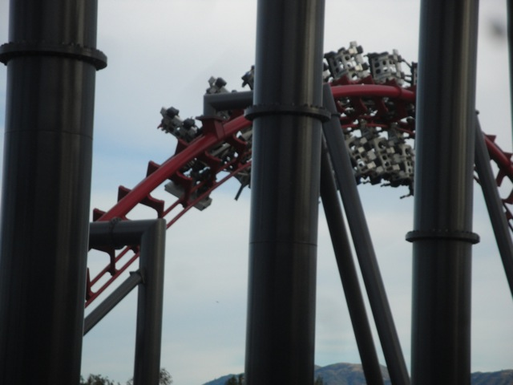
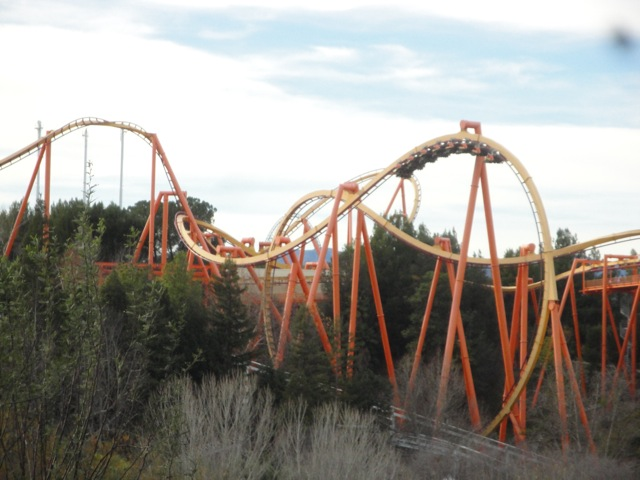

First 2011 Update
Well, it's time for the first update of the year. (Keep in mind that this is just the first update, not our first park visit of the year. That already happened.) Anyways, I had heard that SFMM had really gone downhill since my last visit. So naturally, I wanted to check this out. And while on the verge of going to SFMM, Cody decided to ride his bike there after he failed last time. This time, he made it without any flat tires or problems.
Ugh. The line to process my season pass is so f*cking long. Thank god I only have to do this once a year.
F*CKING LAME!!!!!!!!! THEY GOT RID OF LONGHORNS!!!!! WHAT THE HELL!!!!!!! THAT WAS THE ONLY GOOD PLACE TO EAT IN THE WHOLE F*CKING PARK!!!!!! I can understand the reasons for getting rid of all of your corporate liscences and chain food places. But I simply can not fathom any reason why Six Flags got rid of Longhorns other than to make all their food the same!!! Now, to be fair to the park, they probably had a much better reason for taking out Longhorns than what I can fathom. And who knows, maybe they'll replace it with an extremely great resteraunt. But until then, whatever. More money for Wendys and the Gas Station.
Ooh. Look at Superman's shiney yellow rails. (I never got to see it test. =( )
And in more news, they cleared out the area for Green Lantern. =)
 And hey, it opened up a new Batman shot for us. (Which BTW was running great.)
And hey, it opened up a new Batman shot for us. (Which BTW was running great.)
Uh oh. Why does Atom Smasher look like that? I have a bad feeling about this.
Oh thank goodness. It's only temporarily closed.
 Up next was Goliath. Unfortunetly, there was no marathon today.
Up next was Goliath. Unfortunetly, there was no marathon today.

X2, however, was kicking ass as usual.
Hey Look!!!! I found Superman's old train!!!!
 Wow. Just Wow. That Apocolypse Sign is just beautiful. That may simply be most beautiful ride sign of all time. In fact, I was hoping if I could get the graphic designer who designed this masterpiece to design the next Incrediblecoasters Logo.
Wow. Just Wow. That Apocolypse Sign is just beautiful. That may simply be most beautiful ride sign of all time. In fact, I was hoping if I could get the graphic designer who designed this masterpiece to design the next Incrediblecoasters Logo.
The ride may be called Apocolypse, but these S's from Terminator are still all over the place.
Ooh. New Preshow. This one is shorter. Therefor, it is better.
Why do I see Psyclone?
Hello random Tidal Wave boat. What made you special enough to be a part of this crappy preshow?
Boo!!!! I can't turn myself into a Terminator anymore!!!! ='(
Why do I see Terminator Merchandise in the Apocolypse Gift Shop?
Oh.
 Better get one last milkshake before Six Flags gets rid of all the Johnny Rockets in the park.
Better get one last milkshake before Six Flags gets rid of all the Johnny Rockets in the park.

Might as well take a quick ride on Tatsu while we're at it.
 "I fly like a bird!!!! Soar like an eagle!!!!"
"I fly like a bird!!!! Soar like an eagle!!!!"
While Tatsu was running good today, the operations were not. See the time on my watch? That's how long the train was left on the brake run. 2 minutes and 3 seconds. Not acceptable operations. I never thought I'd say this, but why can't Tatsu be more like Superman Ultimate Flight?
And here in January 2011, Six Flags Magic Mountain is still stuck in Grad Night 2010. Meh, at this point, they might as well just leave it up and just turn 2010 into 2011. Anyways, this visit was much better than I expected after the low reviews. See you at Westcoast Bash Six Flags Magic Mountain.
Home